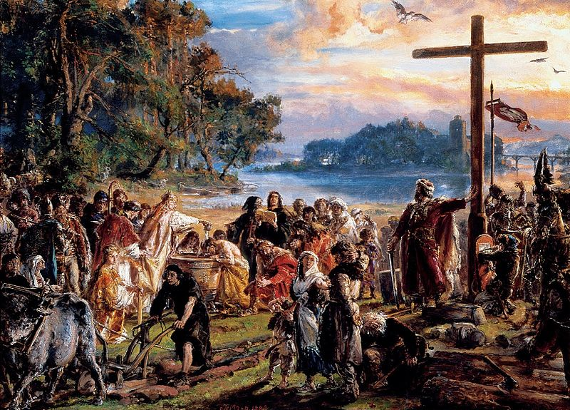

Чтобы одновременно получить союзников в Саксонии (в то время — враги Чехии), гнезненский правитель решился на крещение. В 966 году под влиянием империи и Чехии Мешко принял христианство по латинскому обряду, что стало важнейшей предпосылкой включения польского княжества в культурно-политическую общность католической Европы и латинского языка. Поэтому следует констатировать, что крещение имело прежде всего политический характер, а сдержанность Мешко I свидетельствует о его дальновидности и рациональности. Это позволило ему в короткое время решить проблемы с Вихманом.
Таким образом, что принимая христианство, Мешко I преследовал следующие цели:
В 968 году было основано первое польское епископство в г. Познань. Сближение с империей позволило Мешко I в 967 году присоединить Западное Поморье.
